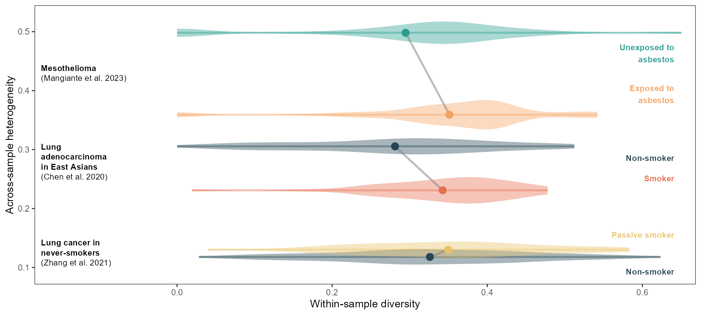
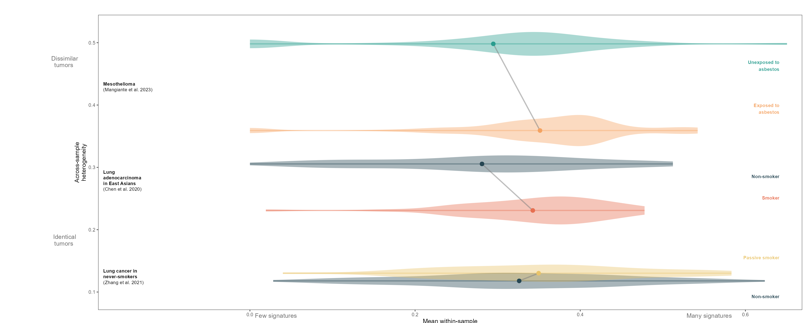
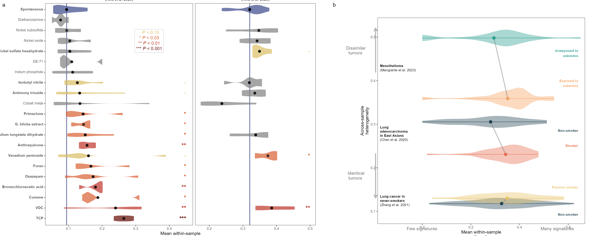

vignettes/carcinogen_figure.Rmd
carcinogen_figure.RmdThis vignette reproduces the analysis conducted in Figure 2 of Morrison et al..
riva_sig_defs = sigvar::mutsig_carcinogens_mice_SBS.refs
chem_abbreviations = data.frame(chemical = c("1-trans-delta-9-TetrahydrocannabJnol", "1,2,3-Trichloropropane", "antimony trioxide", "antrhaquinone", "Black Cohosh", "bromochloroacetic acid", "cobalt metal", "CUMENE", "DIETHANOLAMINE", "furan", "ginkgo biloba extract", "Indium phosphide", "isobutyl nitrite", "nickel oxide", "nickel subsulfite", "nickel sulfate hexahydrate", "OXAZEPAM", "p-Nitroaniline", "p Nitrobenzoic acid'", "Pentabromodiphenyl Ether Mixture", "primaclone", "Resveratrol", "Salicylazosulfapyridine", "Scopolamine hydrobromide trihydrate", "sodium tungstate dihydrate", "Sodium Tungstate Dihydrate", "Triethanolamine", "vanadium pentoxide", "vinylidene chloride"),
chem_name = c("1-trans-delta-9-TetrahydrocannabJnol", "TCP", "Antimony trioxide", "Anthraquinone", "Black cohosh", "Bromochloroacetic\nacid", "Cobalt metal", "Cumene", "Diethanolamine", "Furan", "G. biloba extract", "Indium phosphide", "Isobutyl nitrite", "Nickel oxide", "Nickel subsulfide", "Nickel sulfate\nhexahydrate", "Oxazepam", "p-Nitroaniline", "p Nitrobenzoic acid'", "DE-71", "Primaclone", "Resveratrol", "Salicylazosulfapyridine", "Scopolamine hydrobromide trihydrate", "Sodium tungstate\ndihydrate", "Sodium tungstate\ndihydrate", "Triethanolamine", "Vanadium pentoxide", "VDC"))
riva_relab = mutsig_carcinogens_mice_SBS %>% left_join(chem_abbreviations) %>%
select(Sample, chemical = chem_name, dose_numeric, Tissue, mSBS1:mSBS_N3) %>%
filter(Tissue %in% c("liver", "lung"))
riva_relab$chemical[stringr::str_detect(riva_relab$Sample, "SPONTANEOUS")] = "Spontaneous"
chems = c("Spontaneous", setdiff( riva_relab$chemical %>% unique, "Spontaneous"))
riva_relab$chemical = factor(riva_relab$chemical, ordered = TRUE, levels = chems)
# filter to carcinogen X tumor combinations with more than 5 samples
riva_relab_counts = riva_relab %>% group_by(Tissue, chemical) %>%
summarise(n = n()) %>% filter(n>1)
sigs = colnames(riva_relab)[5:15]
riva_cossim <- lsa::cosine(x = as.matrix(riva_sig_defs[,-c(1:2)]))[sigs, sigs]
riva_var = sigvar(sig_activity = riva_relab,
K = 11, S = riva_cossim,
group = c("chemical", "Tissue")) %>%
`colnames<-`(c("chemical", "Tissue", "group", "across", "mean_within"))
riva_within = riva_relab %>% select(chemical, Tissue) %>%
mutate(within = apply(riva_relab, 1, het, K = 11, S = riva_cossim)) %>%
left_join(riva_var)
meso_raw = MESOMICS_CN_SBS[,str_detect(colnames(MESOMICS_CN_SBS),"^CN[0-9]+") ]
meso_raw = sweep(meso_raw,1,rowSums(meso_raw),"/")
meso = bind_cols(
Asbestos_exposure=MESOMICS_CN_SBS$Professional.Asbestos,
as_tibble(meso_raw)) %>%
filter((Asbestos_exposure %in% c("Exposed", "Non exposed"))) %>%
na.omit() %>%
mutate(Asbestos_exposure_formatted = ifelse(Asbestos_exposure == "Exposed",
"Exposed to\nasbestos",
"Unexposed to\nasbestos"),
.before = 2)
meso_cossim <- lsa::cosine(x = COSMIC3.1_CN[,-1] %>% as.matrix)
zhang_label = "**Lung cancer in<br>never-smokers**<br>(Zhang et al. 2021)"
chen_label = "**Lung<br>adenocarcinoma<br>in East Asians**<br>(Chen et al. 2020)"
meso_label = "**Mesothelioma**<br>(Mangiante et al. 2023)"
carcinogens_within = rbind(data.frame(group = zhang$passive_smoking,
within = apply(zhang, 1, het, K = 14, S = zhang_sig_cossim),
data = zhang_label),
data.frame(group = chen$Smoker,
within = apply(chen, 1, het, K = 3, S = chen_sig_cossim),
data = chen_label),
data.frame(group = meso$Asbestos_exposure_formatted,
within = apply(meso, 1, het, K = 7, S = meso_cossim),
data = meso_label))
zhang_var = sigvar(sig_activity = zhang, K = 14,
group = "passive_smoking", S = zhang_sig_cossim) %>%
`colnames<-`(c("group", "across", "mean_within")) %>%
mutate(data = zhang_label)
chen_var = sigvar(sig_activity = chen, K = 3, group = "Smoker",
S = chen_sig_cossim) %>%
`colnames<-`(c("group", "across", "mean_within")) %>%
mutate(data = chen_label)
meso_var = sigvar(sig_activity = meso %>% na.omit, K = 7,
group = "Asbestos_exposure_formatted", S = meso_cossim) %>%
`colnames<-`(c("group", "across", "mean_within")) %>%
mutate(data = meso_label)
carcinogens = rbind(zhang_var, chen_var, meso_var)
carcinogens_all = left_join(carcinogens_within, carcinogens)
group_labels = carcinogens
nudge = 0.025
group_labels$across = group_labels$across +
c(-nudge, nudge, nudge*0.8, - nudge*0.8, nudge*1.4, -nudge*1.4)
group_labels = group_labels %>% mutate(max_mean_within= max(mean_within)+.13)
data_labels = carcinogens %>% group_by(data) %>%
summarise(across = mean(across), mean_within = mean(mean_within))
data_labels$across = data_labels$across + c(0, 0.01, 0)
carcinogens_plot =
ggplot(carcinogens_all) +
geom_segment(aes(y = across, yend = across, color = group,
x = min, xend = max),
size = 1, alpha = 0.4,
data = carcinogens_all %>% group_by(paste0(data, group)) %>%
summarise(min = min(within), max = max(within),
across, data, group) %>%
distinct) +
geom_richtext(aes(x = -0.18, y = across, label = data), data = data_labels,
hjust = 0,
fill = NA, label.color = NA, # remove background and outline
size = 3) +
geom_violin(aes(x = within, y = across, fill = group,
group = paste0(group, data)), color = NA,
alpha = 0.4, width = 0.05) +
geom_line(aes(x = mean_within, y = across, group = data), size = 1,
color = "#7E7E7E", alpha = 0.5) +
geom_point(aes(x = mean_within, y = across, color = group), size = 3)+
theme_bw() +
theme(panel.grid = element_blank(),
legend.position = "none") +
geom_text(aes(x = max_mean_within, y = across, label = group, color = group),
data = group_labels,
fontface = "bold", nudge_x = 0.16, size = 3, hjust = 1) +
scale_color_manual(values = pal) +
scale_fill_manual(values = pal) +
scale_x_continuous(breaks = c(0, 0.2, 0.4, 0.6)) +
xlab("Within-sample diversity") +
ylab("Across-sample heterogeneity") + coord_cartesian(xlim = c(-0.145, 0.63))
carcinogens_plot
The below step is computationally expensive, so we load the result as a file included in the sigvar R package.
# tictoc::tic()
# # Riva stats
# riva_bootstrap_list_greater = list()
# chemical_tissue = list()
# i = 1
# set.seed(1)
# for(chem in setdiff(chems, "Spontaneous")){
# riva_chem_spontaneous = filter(riva_relab, chemical %in% c("Spontaneous", chem))
# riva_chem = filter(riva_relab, chemical == chem)
# for(tissue in unique(riva_chem$Tissue)){
# riva_bootstrap_list_greater[[i]] = sigvar::sigboot(sig_activity = riva_chem_spontaneous %>% filter(Tissue == tissue),
# K = 11, S = riva_cossim,
# group = c("chemical", "Tissue"), n_replicates = 1000, seed = 1, alternative = "greater")
# chemical_tissue[[i]] = c()
# i = i + 1
# }
# }
# tictoc::toc()
# beepr::beep()
# saveRDS(riva_bootstrap_list_greater, file = "sim_out/mice_boot_stats_seed1_greater.rds")
# readRDS("sim_out/mice_boot_stats_seed1_greater.rds")
# chemical_tissue = sapply(riva_bootstrap_list_greater,
# function(list) list$observed_stats$group[!stringr::str_detect(list$observed_stats$group,
# "Spontaneous")])
#
# group_table = do.call(rbind, lapply(riva_bootstrap_list_greater, function(list) list$observed_stats[,1:3])) %>%
# distinct
#
# # riva_p_values_less = right_join(group_table,
# # do.call(rbind, lapply(riva_bootstrap_list_less, function(list) list$P_value)) %>% data.frame %>%
# # mutate(group = chemical_tissue, .before = 1))
#
# riva_p_values_greater_raw = do.call(rbind, lapply(riva_bootstrap_list_greater, function(list) list$P_value))
#
# riva_p_values_greater = rbind(riva_p_values_greater_raw %>% data.frame %>% filter(group_2 %in% c("Spontaneous_lung", "Spontaneous_liver")),
# (riva_p_values_greater_raw %>% data.frame %>% filter(group_1 %in% c("Spontaneous_lung", "Spontaneous_liver")) %>%
# mutate(across(3:5, function(x) 1 - as.numeric(x))))[,c(2,1,3:5)] %>% `colnames<-`(colnames(riva_p_values_greater_raw)))
#
# riva_p_values_greater[riva_p_values_greater == "<0.001"] = 0
#
# riva_p_values_greater[,3:5] = apply(riva_p_values_greater[,3:5], c(1,2), as.numeric)
#
# riva_p_values_greater = riva_p_values_greater %>% right_join(group_table, ., by = c("group" = "group_1"))
# saveRDS(riva_p_values_greater, "sim_out/mice_boot_stats_seed1_greater_clean.rds")
# ^ This file is saved as "mutsig_carcinogens_mice_bootstrap_p_vals" in sigvar
signif_pal = c("#DABD61FF", "#D95F30FF", "#BE3428FF", "#620800") %>%
`names<-`(c("\U00B7", "*", "**", "***"))
sig2 = mutsig_carcinogens_mice_bootstrap_p_vals
sig2$chemical = as.character(sig2$chemical)
sig2$significance =
ifelse(sig2$mean_within_sample_diversity<.001, "***",
ifelse(sig2$mean_within_sample_diversity<.01, "**",
ifelse(sig2$mean_within_sample_diversity<.05, "*",
ifelse(sig2$mean_within_sample_diversity<0.1, "\U00B7",
""))))
sig2$within_sig = ifelse(sig2$Tissue == "liver", 0.45, 0.5)
bold_list = sig2 %>% group_by(chemical) %>%
summarise(min_within = min(mean_within_sample_diversity)) %>%
mutate(chemical_bold = ifelse(min_within < 0.1, paste0("**", chemical, "**"),
as.character(chemical))) %>%
select(chemical, chemical_bold) %>% distinct() %>%
filter(chemical != "Spontaneous") %>%
rbind(c("Spontaneous", "**Spontaneous**"))
riva_within_sig2 = left_join(riva_within, sig2,
by = c("chemical", "Tissue", "group")) %>%
left_join(bold_list)
sig2 = left_join(sig2, bold_list)
chems_ordered = riva_within_sig2 %>% filter(Tissue == "liver") %>%
arrange(-mean_within) %>%
select(chemical_bold) %>% unique %>% unlist
riva_within_sig2$chemical_ordered = factor(riva_within_sig2$chemical_bold,
ordered = TRUE,
levels = c(setdiff(chems_ordered,
"**Spontaneous**"),
"**Spontaneous**"))
riva_1d = ggplot(riva_within_sig2, aes(y = chemical_ordered, x = within)) +
geom_point(aes(x = mean_within, y = chemical_ordered), size = 3, alpha = 0) +
geom_vline(aes(xintercept = mean_within),
data = riva_within_sig2 %>% filter(chemical == "Spontaneous"),
linewidth = 1, color = "#3A488AFF", alpha = 0.7) +
geom_violin(fill = "#3A488AFF", color = NA, width = 0.9, alpha = 0.7,
data = riva_within_sig2 %>% filter(chemical == "Spontaneous")) +
geom_violin(aes(fill = significance), color = NA, width = 1.3, alpha = 0.7,
data = riva_within_sig2 %>% filter(chemical != "Spontaneous")) +
geom_point(aes(x = mean_within, y = chemical_bold), size = 2.5, alpha = 0.3) +
facet_grid(~ifelse(Tissue == "liver",
"**Mouse liver tumors**<br>(Riva et al. 2020)",
"**Mouse lung tumors**<br>(Riva et al. 2020)"),
scales = "free_x", space = "free_x") +
theme_bw() +
theme(panel.grid = element_blank(),
strip.background = element_blank(),
strip.text = element_markdown(size = 9),
legend.position = "none",
axis.title.y = element_blank(),
axis.text.y = element_markdown()) +
xlab("Within-sample diversity") +
geom_text(aes(x = within_sig, y = chemical_bold,
label = significance, color = significance),
data = riva_within_sig2, size = 5,
fontface = "bold", vjust = 0.5, hjust = 1) +
scale_fill_manual(values = signif_pal) +
scale_color_manual(values = signif_pal) +
geom_richtext(
data = data.frame(label = "
<span style='color:#DABD61FF'> \U00B7 <i>P</i> < 0.10</span><br>
<span style='color:#D95F30FF'>* <i>P</i> < 0.05</span><br>
<span style='color:#BE3428FF'>** <i>P</i> < 0.01</span><br>
<span style='color:#620800'>*** <i>P</i> < 0.001</span>",
Tissue = "liver"),
aes(x = 0.34, y = "Nickel oxide", label = label), color = "grey")
within_center = 0.6025
across_center = 0.547
arrows_df <- data.frame(xstart = c(0.08, 0.08, within_center - 0.2,
within_center + 0.2),
xend = c(0.08, 0.08, within_center - 0.42,
within_center + 0.42),
ystart = c(across_center - 0.2, across_center + 0.2,
0.018, 0.018),
yend = c(across_center - 0.42, across_center + 0.42,
0.018, 0.018),
xlab = c(-0.01, -0.01, within_center - 0.31,
within_center + 0.31),
ylab = c(across_center - 0.31, across_center + 0.31,
-0.025, -0.025),
color = c("blue", "orange", "blue", "orange"),
label = c("Identical\ntumors ",
"Dissimilar\ntumors ",
"Few signatures",
"Many signatures"))
base <- ggplot(arrows_df) +
geom_segment(aes(x = xstart, y = ystart, xend = xend,
yend = yend, color = color),
arrow = arrow(length = unit(0.3, "cm")),
lwd=1.2, color = "#B3B3B3") +
geom_text(aes(x = xlab, y = ylab , label = label, color = color),
lineheight = 0.9, color = "#676767") +
theme_void() +
theme(legend.position = "none",
plot.background = element_rect(fill = "white", color = "white")) +
coord_cartesian(xlim = c(-0.05,1), ylim = c(0,1.02))
# CARCINOGENS
carcinogens_arrows <- base +
annotation_custom(grob = ggplotGrob(carcinogens_plot +
xlab("Mean within-sample\ndiversity") +
ylab("Across-sample\nheterogeneity") +
theme(#axis.title = element_blank(),
plot.background = element_blank())),
xmin = 0, xmax = 1.05, ymin = -0.09, ymax = 1.03)
carcinogens_arrows
riva_center = 0.619
base_within_only <- ggplot(data.frame(xstart = riva_center + c(-0.15, 0.15),
xend = riva_center + c(-0.35, 0.35),
ystart = c(0.031, 0.031),
yend = c(0.031, 0.031),
xlab = riva_center + c(-0.25, 0.25),
ylab = c(-0.023, -0.023),
color = c("blue", "orange"),
label = c("Few signatures",
"Many signatures"))) +
theme_void() +
theme(legend.position = "none",
plot.background = element_rect(fill = "white", color = "white")) +
coord_cartesian(xlim = c(0,1), ylim = c(0,1))
# RIVA
riva_arrows <- base_within_only +
annotation_custom(grob = ggplotGrob(riva_1d+
xlab("Mean within-sample\ndiversity") +
ylab("Across-sample\nheterogeneity") +
theme(#axis.title = element_blank(),
plot.background = element_blank())),
xmin = -0.09, xmax = 1, ymin = -0.095, ymax = 1.13)
# riva_arrows
panels = patchwork::wrap_plots((riva_arrows), (carcinogens_arrows),
widths = c(1.3, 1)) +
plot_annotation(tag_levels = "a")
panels